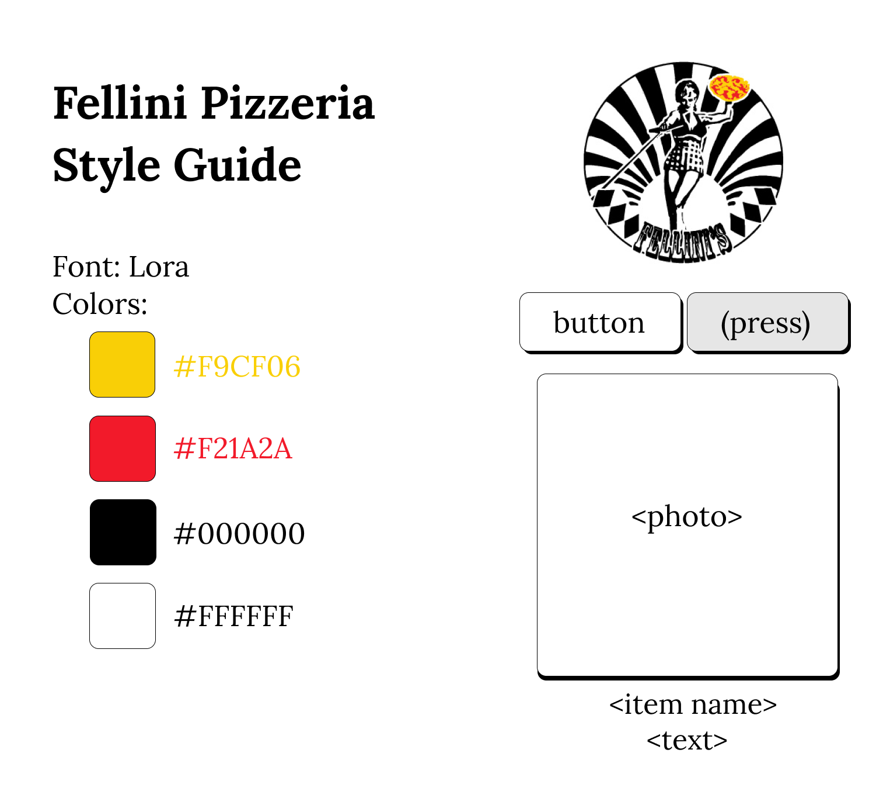
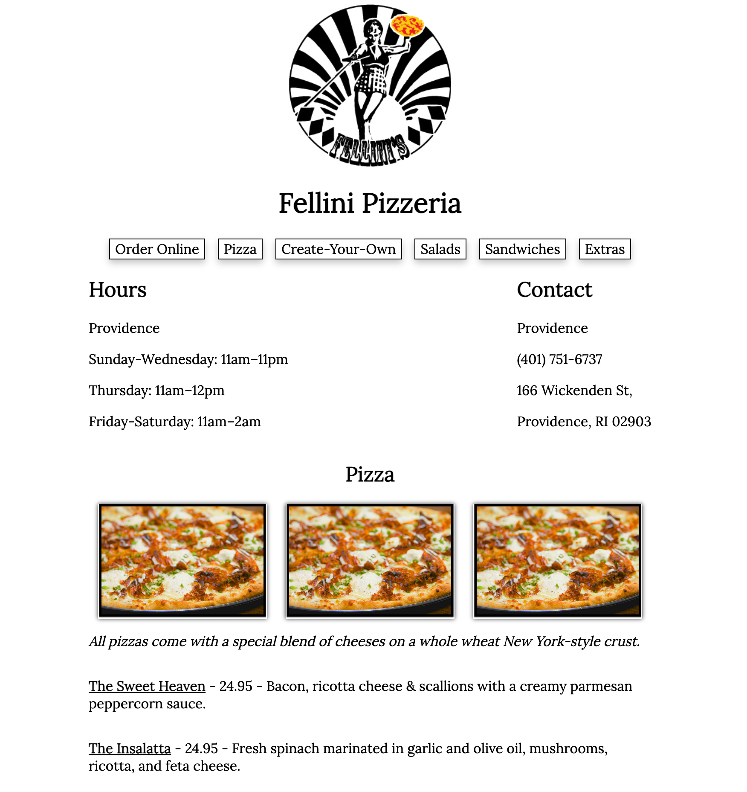

In this project, I practiced the workflow of redesigning a simple website. I exercised my skills in analyzing and identifying flaws in an existing interface, creating low-fidelity and high-fidelity prototypes for various screen sizes, and building a responsive website based on those prototypes.
I chose the Fellini Pizzeria website because I think there are immediately apparent usability problems with the site, which is a shame because their pizza is pretty good. In particular, I want to examine how the presentation of information on the site can be improved.
After choosing a site to redesign, I identified its flaws in terms of usability, learnability, and memorability.
Usability:
- It’s not intuitive that the hours and contact information for the restaurant are listed in an unmarked section at the bottom of the site; this is probably the first piece of information that users would like to know after visiting the site.
- The structure of the site does not lend itself to an efficient user experience; users must scroll past the entire menu before learning whether or not the restaurant is open.
- The menu bar does change in response to the user’s screen size, but the mobile screen size causes the “responsive” menu bar to be much harder to use since it’s messily formatted.
Learnability:
- Some headers are listed on the site’s menu bar (e.g., “Pizza”, “Salad”), but other headers at the same header level are not listed (“Create”); since site navigation is not consistent, it’s harder for users to learn.
Memorability:
- Use of the logo is limited, only appearing in the site’s favicon and the header (and it’s too small to actually see).
- There’s a lack of visual appeal due to the washed out looking images and the fact that the main landing image looks like a stock photo of nondescript floorboards.
In addition to analyzing the website on the three usability guidelines, I used WebAIM WAVE to detect possible accessibility problems. WebAIM WAVE points out that the contrast of the landing page text against the image is poor and makes the text difficult to read. I totally agree, since the text is white and the image contains some scattered white elements. Other than that, the site performs pretty well on WebAIM Wave's metrics, which I think is enabled by its simple design. There are some “skipped heading” issues, but I think those are not the end of the world and are more of a stylistic choice made by the site’s designers rather than an accessibility oversight.
I created low-fidelity wireframes for the site using Balsamiq. I used the wireframes to test out different layouts and to get a sense of how the site would look on different screen sizes (e.g., desktop, tablet, and mobile).
I also created a visual design style guide that displays the main colors, typography, and reusable components’ different states for the site. I used the style guide to make sure that the high-fidelity prototypes I created were consistent with the visual design of the site.
Using Figma, I created a total of 3 high-fidelity prototypes for the site, one for each of the screen sizes (mobile, tablet, desktop). I annotated the elements within the prototype so that a developer would be able to take the designs and reproduce them without needing much additional explanation. In my redesign, I only needed to annotate the desktop version of the site since the styling is the same for the tablet and mobile versions.
Using the final high-fidelity prototypes, I created the redesigned page using HTML and CSS. You can find a link to the site here.
